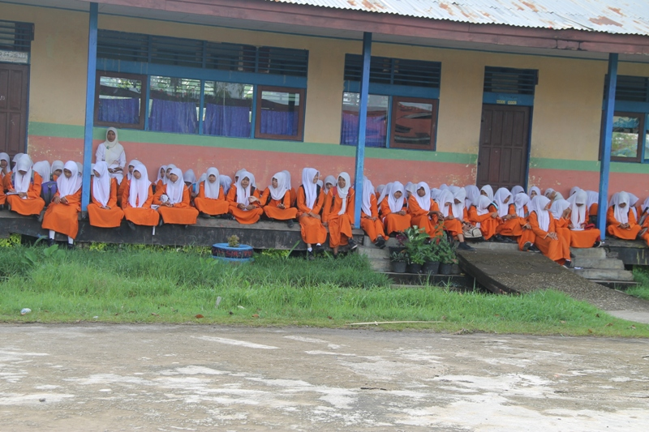

January 14,
2019
2 Commets
Sekolah ramah anak adalah unit satuan pendidikan, baik formal, nonformal, dan informal yang mengutamakan keamanan, kebersihan, kesehatan, kepedulian, berbudaya lingkungan hidup, memberikan jaminan, memenuhi, menghargai akan hak-hak anak serta melindungi anak dari kekerasan, diskriminasi, bullying, dan tindakan salah lain.
Unit satuan pendidikan ini juga harus bisa menjadi wadah untuk partisipasi anak dalam merencanakan kebijakan, pembelajaran, pengawasan, dan mekanisme pengaduan untuk memenuhi hak anak di institusi pendidikan.
Pihak penggagas dalam hal ini adalah pemerintah melalui Kementerian Pemberdayaan Perempuan dan Perlindungan Anak Republik Indonesia (KemenPPPA) sebagai upaya untuk memberikan perlindungan hak-hak anak di sekolah.
RzkyFdlh.